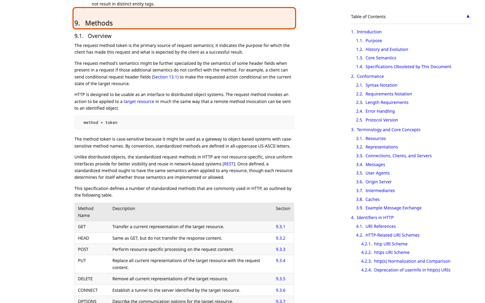

Справочник «Стандартизация HTTP API» · модуль 2 · правила HTTP
Глава 2.2
Методы
и их свойства
Метод указывает, какое действие выполняется над ресурсом. Смысл каждого метода задан стандартом, и на него опираются браузеры, прокси и клиентские библиотеки, поэтому выбирать метод произвольно нельзя. В этой главе разобраны пять методов учебного сервиса и два их свойства: safe и idempotent.
- Категория
- Правила HTTP
- Уровень
- Базовый
- Связанные главы
- 1.3 Ресурсы · 2.3 Коды ответов · 4.3 Заголовки контракта
- Зачем это знать
- Чтобы повтор запроса после обрыва сети не создавал второе обращение
§1Метод — глагол контракта
Значение методов задаёт RFC 9110 — стандарт семантики HTTP. На описанный в нём смысл опираются кэши, прокси, браузеры и клиентские библиотеки. Если сервис использует метод вопреки стандарту, эти посредники начинают вести себя неправильно.

В учебном сервисе используются пять методов. Ниже — каждый из них с настоящими ответами: команды выполнены на запущенном Service Desk API, вывод не переписан.
§2GET: чтение
GET просит представление ресурса. Он не должен менять состояние сервера — это свойство называется safe, и на него опираются: браузер может предзагрузить ссылку, кэш — сохранить ответ, прокси — повторить неудавшийся запрос.
GET /api/v1/tickets?status=open&limit=20
GET /api/v1/tickets/{ticket_id}Возможных исходов у чтения немного: обращение найдено — 200 и тело; не найдено — 404 и описание ошибки; параметры не прошли проверку — 422.
Не принимает тело, не меняет данные, не «отмечает просмотренным». Счётчик просмотров, который увеличивается при GET, — известный источник странных цифр: их накручивают поисковые роботы и предзагрузка браузера.
§3POST: создание
POST отправляет данные в коллекцию, и сервер создаёт новый ресурс. Главное свойство: POST не идемпотентен. Два одинаковых запроса создают два разных обращения. Так метод определён в стандарте: каждый POST на коллекцию — отдельное создание.
POST /api/v1/tickets {"title": "Не работает VPN"}
POST /api/v1/tickets {"title": "Не работает VPN"}HTTP/1.1 201
location: /api/v1/tickets/d22cf098-4373-4bca-a643-5cca0a640a8a
{"id": "d22cf098-…", "title": "Не работает VPN", "status": "open"}
HTTP/1.1 201
location: /api/v1/tickets/b228d2d7-06ca-4eb9-8a72-386595ee39a9
{"id": "b228d2d7-…", "title": "Не работает VPN", "status": "open"}
# идентификаторы разные, обращений в коллекции стало на два большеОтсюда практическая проблема. Клиент отправил запрос, сеть оборвалась, ответ не дошёл. Клиент не знает, создалось обращение или нет. Повторит — рискует получить дубль; не повторит — рискует потерять заявку.
Решение стандартом не описано, но практика сложилась: клиент присылает заголовок Idempotency-Key, а сервер запоминает ключ вместе с результатом. Повтор с тем же ключом возвращает первый результат и ничего не создаёт. Так делают Stripe и Zalando, так сделано в учебном проекте — подробный разбор в главе 4.3.
§4PUT и PATCH: замена и правка
Оба метода изменяют существующий ресурс, но по-разному. PUT передаёт полное новое представление: то, чего в теле нет, должно исчезнуть. PATCH передаёт только изменяемые поля, остальные остаются как были.
- тело содержит все поля ресурса;
- пропущенное поле означает «его больше нет»;
- идемпотентен: повтор даёт то же состояние.
- тело содержит только изменяемые поля;
- остальное сервер не трогает;
- идемпотентность зависит от смысла правки.
В учебном сервисе выбран PATCH: чаще всего меняется один статус, и заставлять клиента присылать заголовок с описанием ради этого не нужно. Посмотрим, что происходит при повторе.
PATCH /api/v1/tickets/84bb7367-… {"status": "closed"}
PATCH /api/v1/tickets/84bb7367-… {"status": "closed"}HTTP/1.1 200 etag: "1497f09b08f7a9b5" {"id": "84bb7367-…", "status": "closed"} HTTP/1.1 200 etag: "257551ee94925a8c" {"id": "84bb7367-…", "status": "closed"}
Обратите внимание: статус после второй правки тот же, а etag изменился. Причина в поле updated_at — сервер обновил время изменения. Состояние ресурса по смыслу прежнее, представление — другое.
Идемпотентность говорит о состоянии ресурса после повтора, а не о совпадении байтов ответа. Второй PATCH не «закрыл обращение ещё раз» — оно уже было закрыто.
§5DELETE: удаление
DELETE удаляет ресурс. Успешный ответ не содержит тела: возвращать больше нечего, поэтому код 204 No Content.
DELETE /api/v1/tickets/84bb7367-… DELETE /api/v1/tickets/84bb7367-…
HTTP/1.1 204
HTTP/1.1 404
content-type: application/problem+json
{
"type": "…/problems/http-404",
"title": "Resource not found",
"status": 404,
"detail": "Ticket 84bb7367-… does not exist"
}Коды разные — 204 и 404, — но DELETE остаётся идемпотентным: после первого и после второго запроса состояние сервера одинаково, обращения нет. На этом примере видно, почему идемпотентность определяют через состояние сервера, а не через совпадение ответов.
§6Safe и idempotent
Эти два свойства часто смешивают. Различить их помогают два разных вопроса: «что делает запрос?» и «что будет, если выполнить его дважды?».
| Метод | Safe | Idempotent | Что показывает учебный сервис |
|---|---|---|---|
GET | да | да | повтор возвращает то же обращение, данные не меняются |
POST | нет | нет | два запроса — два обращения с разными id |
PUT | нет | да | повтор замены даёт то же состояние ресурса |
PATCH | нет | зависит от правки | {"status": "closed"} — да; «увеличить счётчик на 1» — нет |
DELETE | нет | да | 204, затем 404; обращения нет в обоих случаях |
На эти свойства опираются механизмы повторов: клиентские библиотеки и балансировщики автоматически повторяют идемпотентные запросы при обрыве соединения и не повторяют POST.
§7Как выбрать метод
Метод выбирают по смыслу операции, а не по удобству клиента. Таблица ниже покрывает почти все случаи, которые встречаются в учебных и рабочих API.
| Что нужно сделать | Метод и адрес | Успешный ответ |
|---|---|---|
| Получить список с фильтром | GET /tickets?status=open | 200 + страница |
| Получить один объект | GET /tickets/{id} | 200 + ETag |
| Создать объект | POST /tickets | 201 + Location |
| Изменить часть полей | PATCH /tickets/{id} | 200 + новое представление |
| Заменить объект целиком | PUT /tickets/{id} | 200 или 204 |
| Удалить объект | DELETE /tickets/{id} | 204 без тела |
| Выполнить действие («закрыть», «отправить») | PATCH статуса или POST на подресурс | по смыслу действия |
Последняя строка — та, где чаще всего появляются адреса с глаголами. Если действие меняет одно поле, это PATCH: «закрыть» — это {"status": "closed"}. Если действие создаёт новую сущность — например, отправку уведомления, — у неё есть своё имя, и тогда уместен POST /tickets/{id}/notifications.
§8Частые ошибки
DELETE отвечает 404, но остаётся идемпотентным.POST не кэшируется и не повторяется посредниками; прежде чем так делать, стоит упростить фильтр.PUT, недостающие поля обнуляются. Такую потерю данных замечают не сразу.§9Проверьте себя
- Выполните два одинаковых
POSTи сравнитеidв ответах. Сколько обращений стало в коллекции? - Удалите обращение дважды. Какие коды вернул сервер и почему метод всё равно идемпотентен?
- Почему у двух одинаковых
PATCHполучились разныеetag? - Клиент потерял ответ на
POSTиз-за обрыва сети. Что ему делать и что должен предложить контракт? - Операция «закрыть обращение» — какой метод и какой адрес? Обоснуйте выбор.
safe: GET, HEAD, OPTIONSidempotent: GET, PUT, DELETEPOST — ни то, ни другоеGET → 200POST → 201 + LocationPATCH → 200DELETE → 204Idempotency-Keyтот же ключ → тот же результатчто прошу сделать?что будет, если дважды?Справочник «Стандартизация HTTP API» · модуль 2 · глава 2.2Макаров Максим Николаевич